Урок 4.4
Создание макетов для таргетированной рекламы
Правила создания рекламных макетов
Какая композиция лучше: ассиметричная или центральная
Посмотрите на эти плакаты. Вы точно видели такие: они привлекают внимание большим графическим изображением, а сбоку написан какой-то текст. У таких макетов ассиметричная композиция.
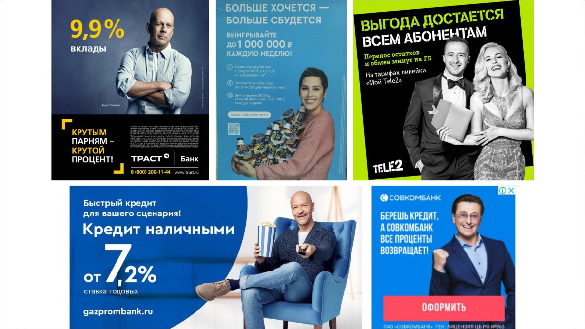Примеры рекламных плакатов с ассиметричной композицией
А вот другой пример, такие вы тоже видели. На этом макете все элементы вытянуты по центру. Это – плакат с центральной композицией, и у него есть две проблемы.
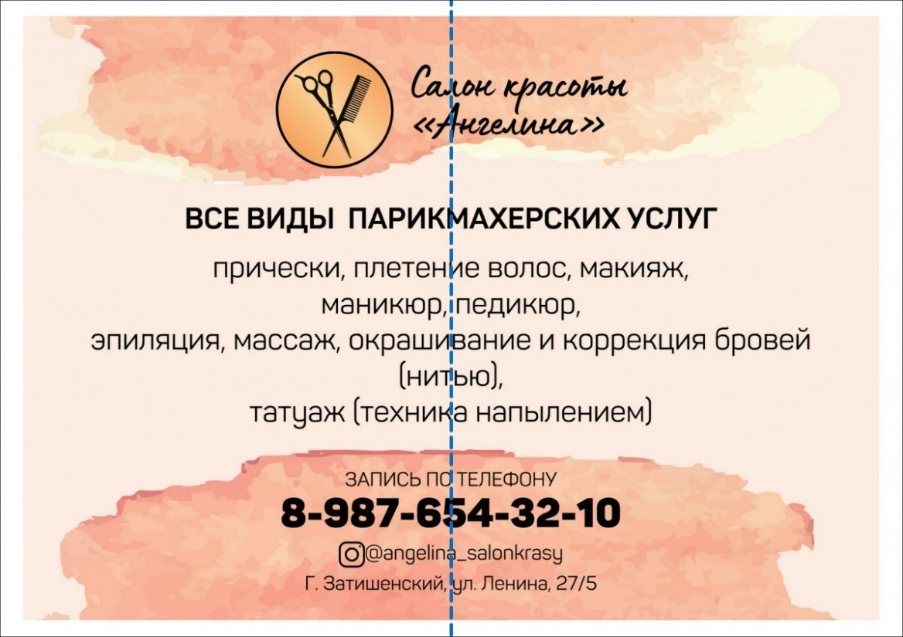На макете с центральной композицией все элементы как будто выстроились по одной струне
Проблема номер раз – размазанный воздух в макете. Пустое пространство распалось на кусочки и непонятно, куда смотреть.
Элементы на макете получились невнятной формы, издали выглядит как пятно, нет акцентов
Если бы мы смогли собрать кусочки воздуха в одно целое, то смогли бы расставить акценты на макете и разбить информацию на блоки. Разбивка на блоки нужна, чтобы не отпугнуть читателя объемом информации. Представьте, что вам нужно кому-то скормить слона. Вы предложите его съесть сразу целиком или по кусочкам?
С воздухом отлично умеют работать оформители постеров для фильмов. Но такое количество воздуха – высший пилотаж. Не переборщите.
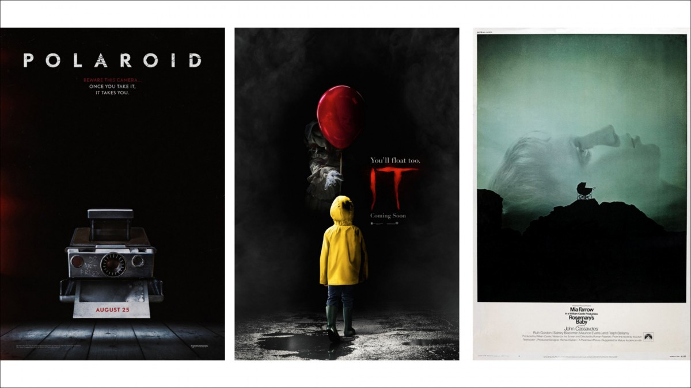Постеры к фильмам. Воздух расставляет акценты, и наш взгляд сразу попадает на центральный элемент.
Обратные примеры, когда в макете мало воздуха, вы тоже видели. В лифте, например.
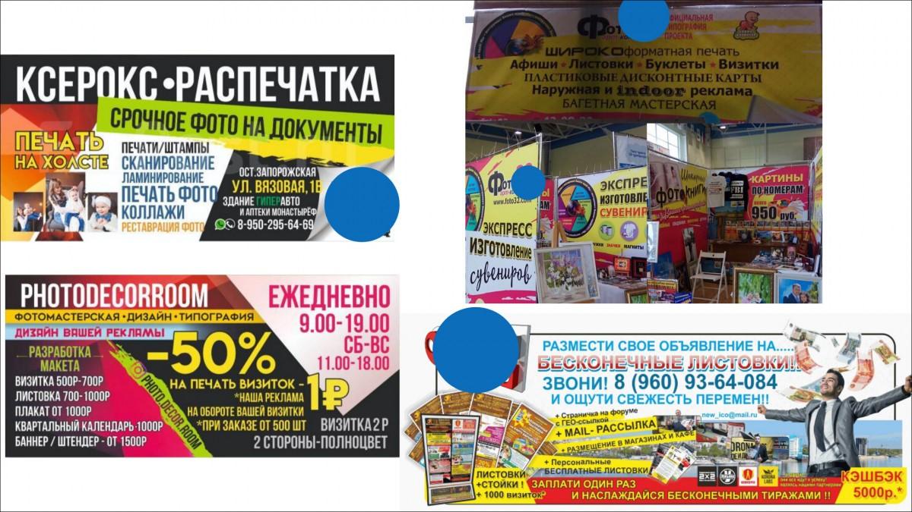Воздух в макете — это важный элемент
Вторая проблема – сбивается ритм чтения. Так уж сложилось, что все мы читаем слева направо, и когда текст имеет рваный левый край, наши глаза быстро устают снова и снова искать начало следующей строчки.
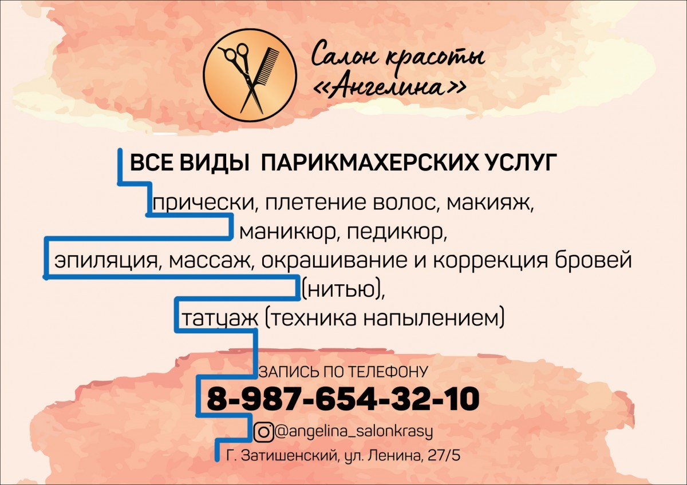Если левый край текста рваный, глазам приходится прыгать с конца строки в новое место каждый раз.
Как избавиться от этих проблем? Текст двигаем влево и выравниваем по краю, а картинку двигаем вправо. Текст получает простой для чтения левый край, а в свободное пространство справа отлично впишется графика, которая обычно сложной формы.
Ассиметричная композиция: текст — влево, картинку — вправо
В том случае, если картинка на макете по форме прямоугольная, то ее можно разместить слева. Вдоль ее ровного края текст тоже хорошо выравнивается.

Прямоугольная графика — слева, текст — справа
Воздух и поля: как не сделать макет-винегрет
Помимо асимметрии нам нужны поля. Поля – это линии построения, за которые элементы с макета не выходят. Элементы, удаленные от границ макета, получают акцент. Простой пример: посмотрите на две фотографии бизнес-ланча. В каких тарелках еда обращает на себя внимания больше?
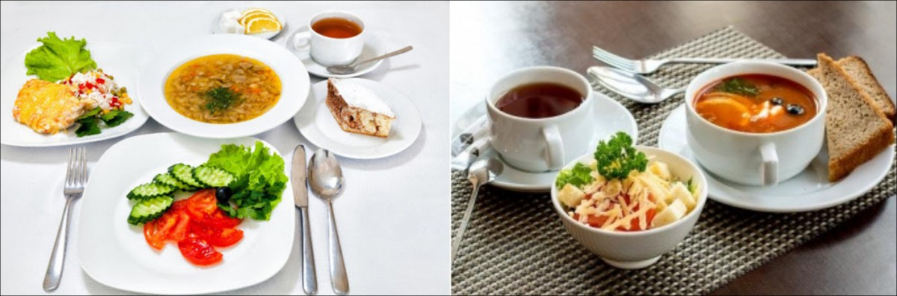Тарелки с широким бортиком создают пространство вокруг блюда, тем самым делая на нем акцент. Содержимое получает размах и ценность.
Делайте поля одинакового размера сверху, снизу и по бокам. Разные поля делать можно, но оставьте это профессиональным дизайнерам.
Поля образуют 4 сильных места на макете – это углы. Нас так и тянет заглянуть в каждый уголок. Поэтому в этих местах традиционно размещают логотипы, контакты, QR-коды.
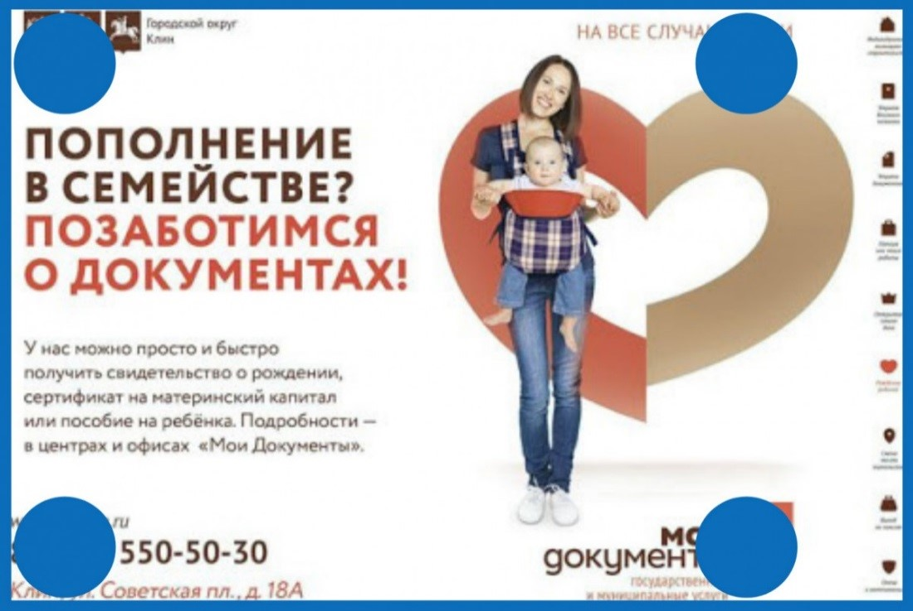Соблюдаем поля, используем углы для важной информации.
Иерархия элементов по принципу воронки продаж
Определите, что на вашем макете самое важное. Все сразу главным быть не может. Как в продажах – вы же не каждому встречному-поперечному по часу говорите о своем продукте? Так и здесь: нужно привлечь внимание зрителя и провести его по всему макету. Построение начинается с графической доминанты – крупной и заметной точки, которая обратит на себя внимание. Располагаем ее справа (помним про асимметрию). Слева размещаем текст.
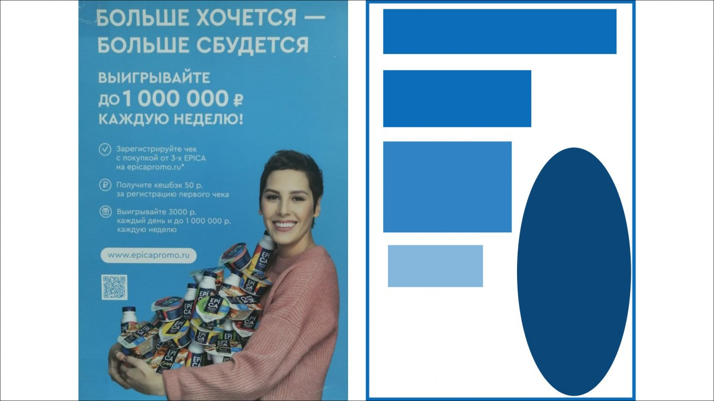Каждому элементу на макете соответствует свой уровень важности. От первого к последнему человек, изучающий рекламу, идет как по воронке продаж. Визуальная иерархия создается с помощью контрастов. Их несколько видов, а самый простой – контраст масштабов: элемент 1 уровня важности делаем самым большим, элемент последнего уровня – самым мелким по размеру.
Выбираем уровни иерархии как этапы воронки. Сначала привлекаем внимание с помощью большого графического элемента. Затем заголовок, которым пробуждаем интерес или, если хотите.
Интригуем человека, вынуждаем дочитать информацию до конца. Хороший способ это сделать – затронуть боль нашей целевой аудитории, которую мы будем решать. Затем приведем дополнительные аргументы в пользу нашего предложения, и в конце добавим call-to-action, призыв к действию – позвони, напиши, приди и купи.
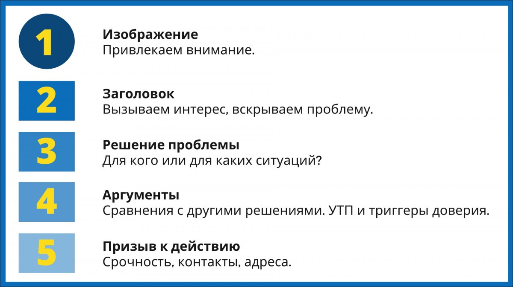Этапы иерархии на рекламном макете
Посмотрим на примере рекламы вклада. Наше внимание привлекает фотография с селебрити. Второе, что мы видим, это суть предложения – условие по процентной ставке, которое вызывает интерес. Дальше наш взгляд скользит на описание ситуации: «Быстрый кредит для вашего сценария!». Если вы заинтересовались и у вас есть сценарий, на что вы потратите эти деньги, вы смотрите дальше и видите контакты – сайт банка.
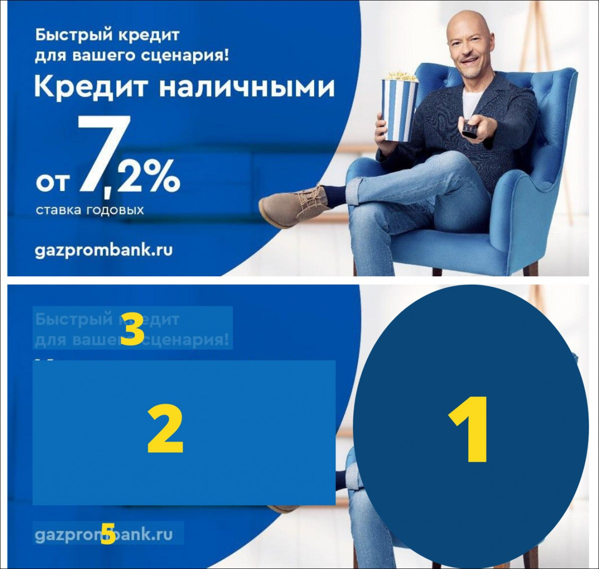Пример визуальной воронки в рекламе
Иерархия расстояний – выделяем ключевое
Поговорим, как работать с текстом и расставлять акценты.
Весь наш макет состоит из расстояний, которые регулируют количество воздуха и связку между элементами. Больше расстояния – больше воздуха и слабее связь, и наоборот. Это работает и с графикой, и с текстом. Несколько кусочков текста собираются в блок. Собрать текст в блок – хороший способ уменьшить количество уровней иерархии на макете.
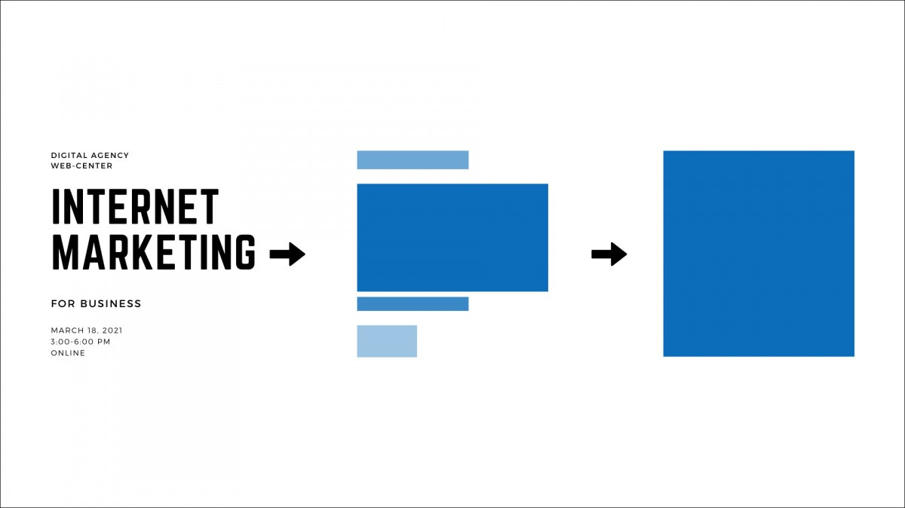Кусочки текста можно объединить в один блок
Все расстояния на одном уровне должны быть одинаковыми. Между двумя буквами – самое маленькое расстояние на макете, и всегда одинаковое. Между двумя словами в тексте – расстояние побольше, но тоже всегда равное. Между строками, между заголовком и подзаголовком – аналогично.
Работаем с текстом: какие выбрать шрифт и цвет?
Теперь про шрифты. Шрифт – это набор символов, объединенных одним стилем и композицией. Гарнитура – это семья шрифтов разных начертаний и размеров. С начертаниями вы сталкивались в любом текстовом редакторе:
- Regular - обычный шрифт;
- Italic – курсив;
- Bold – жирный;
- Italic Bold - жирный курсив.

Пример гарнитуры, шрифтов и начертаний
11 простых правил, как сделать макет без грубых ошибок:
- Используйте не больше 1 гарнитуры на макет: их специально спроектировали так, чтобы они отлично сочетались друг с другом.
- Используйте не больше 3 шрифтов на макет. Этого достаточно, чтобы выстроить иерархию. Если по какой-то причине вам нужно больше, меняйте начертания.
- Для цифровых макетов – баннер на сайт, обложка для ВКонтакте, картинка для таргета – используйте шрифты без засечек. Они лучше выглядят, проще читаются и не замусоривают текст.
- Для макета достаточно 3 цветов: один для фона, один для текста и еще один акцентный. Обычный набор – черный, белый и яркий цвет для привлечения внимания. Чтобы элементы текста сочетались с графикой, можно использовать ее основной яркий цвет как акцентный.
- Цвет текста должен контрастировать на фоне, чтобы информация оставалась читабельной.
- Переносите предлоги, союзы и короткие местоимения на следующую строку, иначе визуально они «отваливаются» от строчки. Особенно это заметно на больших блоках текста.
- Не выравнивайте текст по ширине – так вы нарушаете порядок расстояний. Ровный левый край текста и рваный правый – это нормально и привычно для человеческого глаза.
- Не забывайте про ассиметричную композицию.
- Соблюдайте поля.
- Закрепляйте в углах важную информацию.
- Выстраивайте иерархию элементов, как этапы воронки продаж.
Делаем макет в сервисе Canva — простой инструмент для не-дизайнеров
Canva – удобный онлайн-сервис для создания рекламных макетов с большим количеством бесплатных функций. Если вы не дизайнер, Canva упрощает процесс верстки за счет автоматизации некоторых процессов и большого набора готовых решений и шаблонов.
Для вдохновения:
- Группа ВК Дизайнер SMM | Креативы
- Приложение Pinterest
- Приложение Behance – творческие портфолио
- Телеграм канал Готовые сторис
- Телеграм канал Шедевры рекламы
- Телеграм канал Реклама
Эти макеты, я взяла там: